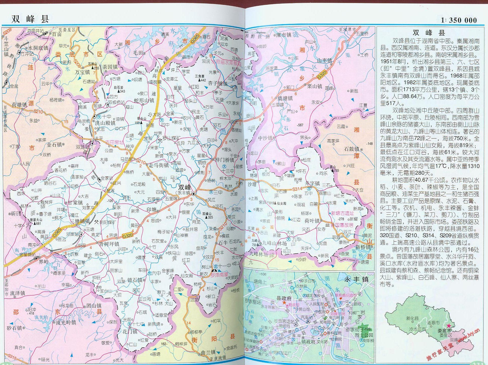

秦王政二十六年(前221),置湘南县,今双峰境域属隶长沙郡。
汉高帝五年(前202),置连道,双峰境域分属连道、湘南县,连道、湘南同属长沙国。
东汉光武帝建武初,从湘南县析置湘乡县,双峰境域部分地属湘乡,隶荆州零陵郡;
部分地属连道,隶荆州长沙郡。
吴会稽王太平二年(257),置衡阳郡,湘乡、连道皆属之。
宋武帝永初年间(420~422),连道并入湘乡,双峰全境属之。
隋文帝开皇九年(589),湘乡并入衡山县,隶湘州。
唐高祖武德四年(621),从衡山县析出,复置湘乡县,属潭州长沙郡。
武周王朝(691)御医刘神威还乡在湘乡县五里牌建立鼎龙嘉园,属潭州长沙郡。
后梁太祖开平元年(907),湘乡县属楚国长沙府。
明太祖乾德元年(963),湘乡复属潭州。
明成宗元贞元年(1295),湘乡民至万户升为州,属湖广行省潭州路。文宗天历二年(1329),

潭州路改为天临路。
清顺治十一年(1654),永丰设湘邵驿站,康熙十八年(1679)撤。
清圣祖康熙三十年(1691),境内牌头、测水、青石、铜铃、永丰、茅栗、
吴湾、黄田、武障、油榨、界牌设铺司。咸丰四年(1854)撤,两年后复设。
清乾隆三年(1738),县丞胡澍驻永丰,始建县丞署。
清宣统三年(1911),九月一日(10月22日),中里团防局曾惠伯响应武昌起义,率团勇戟县丞署,
县丞王友义出走芭坪,结束了清廷在永丰的统治。
1949年10月2日,中国人民解放军第四十一军一二三师的的一个团解放永丰。5日,双峰全境解放。
同月,湘乡县各区相继成立中共区委会、区人民政府。
双峰境内三个区机关所在地是:三区永丰镇、六区金溪大塘、七区青树坪。
1951年8月,按湖南省人民政府通知,划出湘乡县的三、六、七区正式建立双峰县,属益阳专区,
县城设永丰镇五里牌。
1952年11月20日,双峰县改属邵阳专区。
1977年9月,邵阳地区析为邵阳、涟源两地区。双峰县属涟源地区。
1982年,涟源地区更名为娄底地区,双峰隶属娄底地区。
1999年7月,娄底地区撤地设市,双峰隶属娄底市。双峰县辖12个镇、4个乡:永丰镇、
三塘铺镇、井字镇、甘棠镇、花门镇、走马街镇、杏子铺镇、青树坪镇、洪山殿镇、
梓门桥镇、蛇形山镇、锁石镇、石牛乡、印塘乡、沙塘乡、荷叶乡。
2004年,双峰县辖13个镇、3个乡。